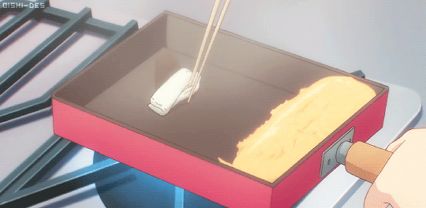

Tamagoyaki Recipe

A recipe even my dog can follow
This is the most simple recipe out there. It's just as easy as making rice in a rice cooker but takes 5 minutes max(curse those fancy rice makers that take 45 minutes to cook).
What you'll need:
- 1 large egg
- 1/4 tsp dashi powder
- 1 tsp vegetable oil
tatus
Let's get started!
- Beat the egg and add in the dashi powder.
- Make sure to use a square pan to create a crisp edge.Preheat your pan on low medium heat.
- Add your oil into a ramuken and use a folded paper towel along with a pair of chopsticks or tongs to evenly saturate the pan with a light coat of oil.
- Pour a small amount of your egg mixture to the pan. Keep the layer light and thin so it folds easily.
- The best way to fold the egg into a roll is by using two spatulas: one to keep the egg in place and the other to do the actual folding over. Keep folding until it's in the shape of a log and push to one side of the pan. Repeat steps 3-5 until you use up all the egg mixture.
That simple! The technique might be tricky at first but you'll be a tamagoyaki master in no time!
